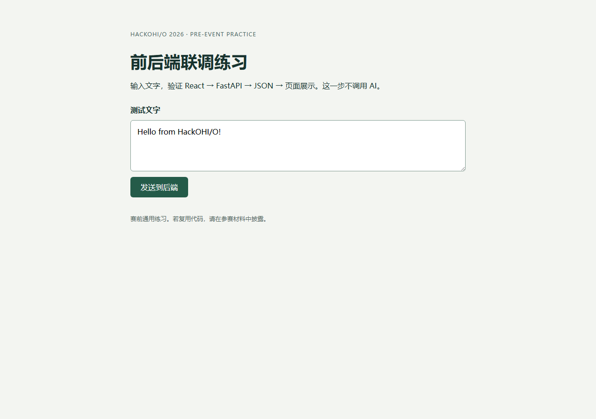
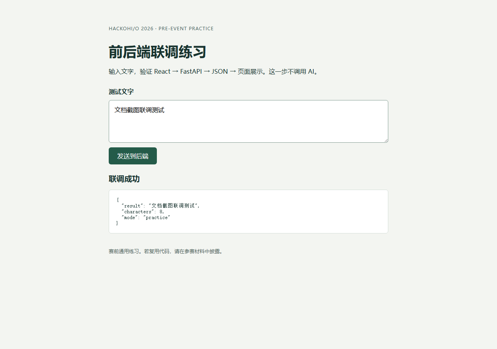
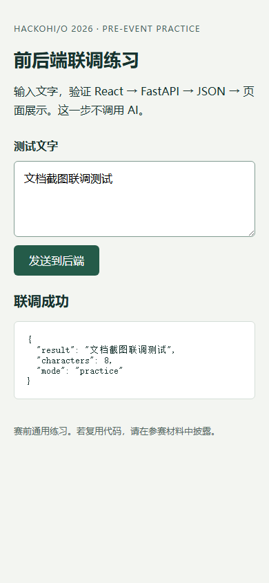

独立开发环境
doneD 盘 .venv；Python 3.11.9，Node.js 22.19.0；依赖版本锁定。
这是两人团队的赛前环境准备仓库。用户承担核心开发；队友技术基础较弱，正在尝试 coding agent 辅助的前端、测试与展示工作。正式 Sponsor Challenge、数据与产品功能尚未确定，现有界面只验证文字回显链路。
先读 AGENTS.md 与 PROJECT_CONTEXT.md，再按文件地图进入代码。用户当前的任务决定工作范围；此页的待办不是自动执行全部任务的指令。
拥有者目录 D:\HackOHIO_1024；远程 BOWEN2491/Hacking1024。服务是否运行、分支是否同步应现场检查，不从快照推断。
准备能力 6 / 8；这不是比赛产品完成率。
2026-10-22：构建、pip check、真实中文 POST、空输入、422、模拟 503 与恢复、桌面/手机布局及 Streamlit 基本交互通过。2026-10-23：Git 真实推送与远程一致性验证通过。
用户历史 API 测试返回 OK。当前 Key 是否存在、余额是否足够需要重新检查，不能由历史测试推断。
2026-10-24：队友 agent 报告云端 Linux 安装、浏览器交互和构建通过，尚未连接她的 Windows。本次独立实查 nnyyttg 权限为 write；其本机安装与实际推送尚未验证。
详细手动清单见 CHECKLIST.md。这些是待确认状态，不代表已发现技术故障。
D 盘 .venv；Python 3.11.9，Node.js 22.19.0；依赖版本锁定。
POST /api/echo、JSON 展示、加载/错误状态；不调用 AI。
单 Python 界面，有效与空输入验证通过。
main 已推送，跟踪 origin/main；写入权限已验证。
用户历史测试成功；独立脚本可主动重测。余额与当前 Key 状态仍未确认。
AGENTS、简短摘要、完整项目页、维护协议及赛前披露。
nnyyttg 已有 write；云端据报告通过，仍待 Windows 本机测试与实际分支/PR。
正式题目确定后再设计和实现；当前没有 Sponsor 专用功能或线上部署。
来源：frontend/src/style.css；这是练习界面的配色，不代表已确定比赛产品品牌。
应用使用 system-ui、Microsoft YaHei、sans-serif。无外部字体或字体下载服务。
标题使用 clamp(26px, 5vw, 36px)；按钮和表单继承系统字体。
内容最大宽度 720px，两侧总留白 40px；桌面顶部 64px，520px 以下顶部 32px。表单间距 12px，按钮和输入框圆角 6px。
来源：frontend/src/style.css。此文档页自身沿用 project-docs 模板布局。
同一个真实路由 / 的三个状态；由 take-screenshots.mjs 采集，日期 2026-10-23。不涉及付费 API。



浏览器访问本机 5173 端口，React 表单向相对路径 /api/echo 发出 POST。Vite 将 /api 转发至 8000 端口的 FastAPI，后端校验并去除文字首尾空白后返回回显和字符数；React 更新成功或错误状态。备用 Streamlit 独立运行在 8501 端口。OpenAI 仅由独立命令行检查脚本主动调用，不在默认页面链路中。没有数据库或云端服务；静态前端构建不能代替 Python 后端部署。
| 概念 | 仓库相对路径 |
|---|---|
| 新 agent 入口 | AGENTS.md |
| 新对话简短背景 | PROJECT_CONTEXT.md |
| 安装与启动 | README.md |
| 队友任务与 PR | TEAMMATE.md |
| 手动准备事项 | CHECKLIST.md |
| 赛前披露 | PRIOR_WORK.md |
| 决策记录 | DECISIONS.md |
| Windows 启动入口 | start.ps1 |
| API 定义 | backend/main.py |
| 页面入口 | frontend/index.html |
| 表单与请求 | frontend/src/main.jsx |
| 界面样式 | frontend/src/style.css |
| 开发代理 | frontend/vite.config.js |
| 前端命令和依赖 | frontend/package.json |
| 前端完整依赖版本 | frontend/package-lock.json |
| Python 完整版本 | requirements-lock.txt |
| Python 依赖范围 | requirements.txt |
| 后备练习 | fallback/app.py |
| 环境检查 | scripts/check_environment.py |
| 可选 API 检查 | scripts/check_api.py |
| 环境变量模板 | .env.example |
| 历史计划 | task_plan.md |
| 历史执行记录 | progress.md |
| 完整项目页 | project-docs/index.html |
| 文档维护协议 | project-docs/MAINTENANCE.md |
| 截图工具 | project-docs/take-screenshots.mjs |
没有数据库、ORM、迁移、用户登录或持久化业务数据。是否引入数据存储应由正式题目决定。
OPENAI_API_KEY OPENAI_MODEL SITE_URL PLAYWRIGHT_MODULE
前两个来自 .env.example；后两个仅供截图工具使用。真实值和密钥不进入项目文档。
.\start.ps1 .\start.ps1 -Mode check .\start.ps1 -Mode fallback .\start.ps1 -Mode api # 仅在明确需要真实 API 测试时执行 npm.cmd --prefix frontend ci npm.cmd --prefix frontend run build .\.venv\Scripts\python.exe -m pip check node project-docs/take-screenshots.mjs
前端 5173，后端 8000，Streamlit 8501；仅监听本机。截图工具需要已有 Playwright 和 Chromium，可通过 PLAYWRIGHT_MODULE 指向现有模块；不是应用启动必需依赖。
新对话从拥有者的 D:\HackOHIO_1024 打开；其他队员使用自己的克隆目录。
完整原因和代价见 DECISIONS.md。
想法只保存在本机浏览器 localStorage，不会自动修改仓库。通过“复制 HTML”取得片段，写入 project-docs/index.html 中的 claude:wishlist:start 和 claude:wishlist:end 之间，再提交才会同步给队友。
write 权限已核实；在队友 Windows 本机验证克隆、安装和页面，再完成一次真实 PR。
Added: 2026-10-23
本人确认余额预算、报名、Discord 和最新提交要求；不要把未知状态自动勾选。
Added: 2026-10-23
根据 Challenge 决定算法、API、数据与是否部署；当前不预设 AI 必需。
Added: 2026-10-23
用户转述的云端 Linux 报告通过；本机 Windows 尚未验证。GitHub API 实查 nnyyttg 为 write，无需重复邀请，实际推送与首个 PR 仍待完成。
加入 AGENTS、PROJECT_CONTEXT、完整项目页与维护协议；背景明确区分已验证、历史证据和未知状态。
42a494a：实际仓库安装与团队协作说明；main 已推送 GitHub。
86faf81：隔离环境、React/FastAPI 回显、Streamlit 后备、可选 API 检查、测试与披露材料。